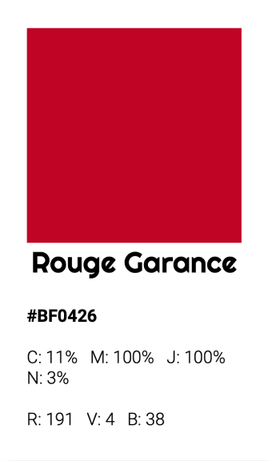
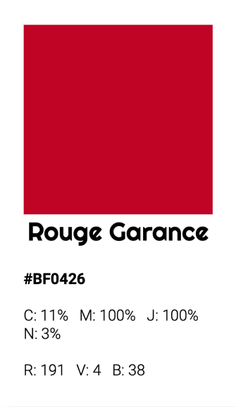
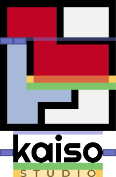

Kaiso est une famille, avec de forts liens et une amitié entre quatre designers... Mais c'est avant tout un appartement. Notre premier siège, qui est aussi un espace de vie. C'est ici que Kaiso est né, a grandi et a mûri...
Au coeur de ce logo, nous trouvons cet appartement, déconstruit en 4 blocs suivant l'architecture de l'espace.
Chaque pièce peut être considérée comme un élément modulaire, essentiel au logo. Cela signifie que les pièces peuvent être disposées de la manière souhaitée pour adapter notre identité à différents supports, en utilisant les blocs comme masses graphiques.
Le logo a également une signification infographique. Chaque couleur représente un groupe de pièces, organisées de manière hiérarchique en fonction du temps passé sur elles pendant nos heures de travail. Veuillez vous référer à la légende ci-dessous.
PIECES OÙ NOUS PASSONS 80% DE NOTRE TEMPS (LE BUREAU ET LE SALON)
ICI NOUS PASSONS MOINS DE 20% DE NOTRE TEMPS (CUISINE ET SALLE DE BAIN)
LES CHAMBRES : ON Y TRAVAILLE JAMAIS (SAUF MIKE...)
"Kaiso" est le nom de notre agence. Le choix de la police de caractères Righteous résonne avec nos références graphiques et notre logo. La présence de courbes simples rompt la linéarité du logo et des autres lettres.
Le mot "STUDIO", quant à lui, est écrit en Montserrat, clin d'œil à la toute première identité graphique de Kaiso. Cette police de caractères très polyvalente était la police d'origine du studio. Nous l'utilisons maintenant de manière plus modérée.
Le logo (à la fois horizontal et vertical) fonctionne également de manière déconstruite. En réalité, l'ensemble de l'identité de marque repose sur la notion de modularité. Il est important de transmettre à l'observateur que les pièces sont interchangeables.
Cependant, il convient de faire preuve de prudence pour ne pas exagérer (dans l'esprit des gens, le logo devrait rester rectangulaire), mais ils doivent comprendre qu'il peut être dynamique de temps en temps.
Il est crucial de maintenir une composition cohérente sans déformer ou séparer trop fortement les blocs.

 
 Dans toutes les utilisations du logo avec le texte ci-dessous, il est essentiel de maintenir les bonnes proportions entre le logo et la typographie. Par conséquent, veuillez respecter strictement les proportions indiquées ci-dessous lors de la reproduction du logo.
Indépendamment de l'utilisation du logo, il est crucial de maintenir un espace clair ou une zone d'exclusion (marge) entre le logo et les autres éléments.